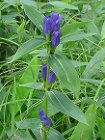
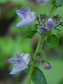
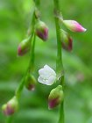

虫の音は、どこで聞こえるのでしょうか？庭先ですか、それとも耳もとですか。
▼茜色
アカネは山野の草地や道端などに生える多年草。茎は四角形で細く、こまかい逆棘があり、葉は対生であるが、輪生状に見え、長い葉柄をもち、葉身は先のとがった長心形か長卵形で、基部は心形または円形『夕暮れに緋色やアカネ秋の雲』
▼甘茶
アマチャヅルは山野の林や、やぶ地に生える多年草。茎はつるになり、巻きひげで他物につかまって高くのぼる。葉は互生し、5枚の小葉を持った鳥足状複葉で、小葉は狭卵形で先はとがり、へりに鋸歯がある。花は雌雄異株。果実は球形の液化で上部に環状のすじがある。『鉢巻を果実に巻いたアマチャヅル』
▼待秋
モミジガサは山地の湿気のある林内に生える多年草。茎は単一で直立する。葉は深緑色で互生し、掌状に7中裂する。裂片は先が鋭くとがった長楕円形で、へりにはまばらにあらく鋭い鋸歯がある。『時を待ちそっと花咲くモミジガサ』
▼頂
コマクサは火山性高山の岩石地に生える多年草。数枚の根生葉は質が厚くほぼ三角形で細かく裂け、線状長だ円形で鋭頭となる。花茎を数本出し、2～10個の紅紫色の花がつく。花は平たくやや三角形。花弁は4枚。『コマクサに登頂出会い汗拭う』
▼夕立
ノコギリソウは山地の日当たりのよい草原に生える多年草。茎は直立し、葉と茎の上方に軟毛がある。葉は互生し、羽状に中～深裂し、へりには鋭い鋸歯がある。葉柄はなく、基部は多少茎を抱く。上部の葉腋から小枝を出し、白色または淡紅色の頭状花を多数つける。『雷鳴やノコギリソウも告げる秋』
▼大風
カワラヨモギは川原や海岸の砂地に生える半低木状の多年草。根生葉は2回羽状に全裂し、花期には枯れる。茎の葉は互生し、2回羽状に全裂し、裂片は細い毛状。『大風を吹き流すカワラヨモギかな』
▼雨宿り
オオヨモギは山地に生える大型の多年草で、高さ1.5～2mになる。地下茎を伸ばして増え、茎は双生する。葉は洋紙質で羽状に中～深裂し、裂片は２～３対あり鋭くとがる。表面はくも毛があるか、または無毛で、裏面は綿毛が密生して灰白色。『雨上がり待つ目に留まるオオヨモギ』

▼何をしなくても
エゾリンドウは山地の湿地に生える多年草。葉や茎は平滑無毛で多少粉白を帯びる。茎は円柱形で直立し、葉は対生し、皮針形～広皮針形で先はとがる。葉柄はなく、3本の太い脈が目立ち、裏は粉白を帯びる。『無為に咲くエゾリンドウを見比べし』
▼ちびウリ
スズメウリは、原野ぼ水辺の林縁や、やぶなどに生える一年草。茎は細い巻きひげで、他物につかまってよじ登る。巻きひげは分枝せず、節から葉とともに出る。葉身は薄質の三角状心形で、へりにあらい歯牙状の鋸歯がある。花は雌雄同株。果実は直径約12mmの球形で、すべすべした無毛の液果。熟すと灰白色になる。『長芋と寄り添いながらスズメウリ』
▼コケのように小さい
コケオトギリは休耕田うあ湿地などに生える一年草。茎は細く、高さ3～10cmでよく枝分かれする。葉は対生し、黄緑色の広卵形で長さ2～7mmと小さく、多数の明点が入る。花は枝先につき、花弁は5枚で長さ2.5mm。萼も5枚で花弁より長い。『芝上でコケオトギリに身を屈む』
▼麝香
ジャコウソウは山中の谷間や湿った樹林の下などに生える多年草。茎は基部から分枝して株立ちとなり、枝を分けず、葉は対生し、狭い倒卵形か広倒等皮針形で先は長く尖り、へりに鋸歯がある。花は上部の葉腋につき、茎や葉に特有の香りがある。『栃木路で会えて良かったジャコウソウ』

▼忘れていた
カメバヒキオコシは山地の林縁などに生える多年草。茎は数本株立ちする。稜上に下向きの短毛がある。葉は対生し、卵形でへりに鋸歯があり、先端が左右から切れこみ、中軸が細い尾状にのびる。花軸、花柄、がくに微毛が密生する。『幾年かカメバヒキオコシ撮り忘れ』
▼矢じり形
アギナシは池沼のへりまたは溝などの湿地や浅い水中に生える多年草。オモダカに似ているが葉が細く、下記の点で見分けることができる。葉は矢じり形であるが、頂片は側片も幅がせまく、頂片は線形か広披針形、側片は頂よりも小さく、いずれも先は鈍端である。初期のころは広披針形である。葉腋に多数のむかごができる。走出枝がでない『矢じり形田んぼのへりにアギナシて』
▼秋風
ツルボは草地、土手、畑のふちなどに生える多年草。鱗茎幅がさ2～3cmの卵球形で、外被は黒褐色である。葉は厚質でやわらかく、長さは15～25cm倒被針状線形で、上部に長さ7～12cmの総状花序を出し、多数の花をつける。花は斜め上向きに咲く。花被片は6枚で、長さ約4mmの倒披針形である。雄ずいは6本、雌ずいは1本である。果実は倒卵形のさく果で、種子は長だ円形である。『河川敷風に吹かれてつるぼ立つ』
▼寄り添う
シラネアザミは（だと思う）高山の日当たりの良い草原に生える多年草。でも出会ったのは高山ではない。薄暗い深山の川沿いだ。もっとよく葉や茎の特徴を掴んでおくべきだった。毎度懲りずに『後悔先に立たず』。二つ並んだ花を見ると二人の娘に思いを重ねる。『凛凛とシラネアザミや娘達』
▼巴咲く
シオガマギクは山地の日当たりのよい草原に生える多年草。ほとんど無毛。茎は赤紫色で、根元から数本が株立ちとなり、40～80cmになる。葉は互生または対生し、広皮針形あるいは狭卵形でヘリに大きさのそろった鈍い歯牙状の重鋸歯がある。上方の葉がしだいに小さくなり、花序の部分で苞となる。茎の先端に花穂をつくり、紅紫色の花を開く。花冠は約2cmの唇形である。『巴咲くシオガマギクを見つめ入る』
▼純粋な自分
キツネノマゴは野原や道ばたに生える1年草。茎は下向きの短毛があり、四角形または六角形で、高さ10～40cm。上方で枝を分ける。葉は対生し、卵形でへりと両面に毛が散生する。茎の先や葉腋の短い枝の先に花穂を出し、唇形の小花を密生する。苞は披針形で、がくは深く5裂し、苞と同長である。花冠は下唇が大きく、先は浅く3裂し、内側が淡紅紫色で紅色の斑点があり、上唇は狭く白色である。雄ずい2本。雌ずい1本。どうしたらいいんだろうかと色々思案し、人の書いたものを読んでみたり、種々雑多なことをして、その様に気持ちを作り変えようとしても、一向に手ごたえは感じられません。純粋な自分を見つけられますか？
▼柚香菊
ユウガギクは山野の日当たりのよい草地に生える多年草。地下茎を伸ばして繁殖する。茎は高さ30～150cm。上部の葉は披針形～狭披針形で茎と鋭角につき、中部より下の葉は羽状に中裂し、さわるとざらつく。茎は開出すると枝を分け、頭状花を付ける。頭状花は黄色の管状花と白色または淡紫色を帯びた舌状花からなる。『登山口古賀志山むく柚香菊』 『葉をこすり嗅げば微かに柚香菊』
▼足元
アゼトウガラシは田の中や沼のへりなどの湿地に生えるやわらかな無毛の1年草。茎は下部で枝を分けて横に広がり、葉は対生する。基部は細くなるが無柄である。花は茎の上部の葉腋につく。『稲穂垂れアゼトウガラシ際に生え』
▼彼岸花
堤防、田のあぜ、墓地、道端などの草地に生える多年草。地下に卵形の鱗茎がある。秋、葉のない時期に鱗茎から高さ40～70cmの花茎を直立し、頂上に5～8個の花を散形上につける。花は赤。花被の筒部は長さ6～7mm、6枚の花被片は著しく外曲し、6本の雄ずいが長く突出する。葉は花期の終わった10月に伸びだして、翌春5月ごろ枯れる。色は濃緑色で、長さ30～50cm、幅7～10mmの線形、先はまるい。実は結ばず、鱗茎が分割して繁殖する。中国原産で、有史以前にわが国に入った史前帰化植物と考えられている。別名：マンジュシャゲ。『実は成らず好まれ増えしヒガンバナ』
▼稲刈り近し
コナギは沼や水田などに生える１年草。葉は根生し、長さ3～7cm、幅1.5～3cｍの広卵形ないし卵状だ円形で、鋭頭、基部は心形、葉柄は長さ10～20cmである。総状花序は短く、長さ3～6cmで、高さが葉より低いため腋生のように見え、3～7個の青紫色の花をつける。花柄は長さ1cm。花茎は1.5～2cm。花冠は鍾形で6深裂し、各裂片は長だ円形である。6本の雄ずいのうちの1本は大きく、花糸の基部に歯牙がある。果実はさく果で、長さ1cmのだ円形である。種子は1mmのだ円形で多数ある。『水枯れし田んぼで出会うコナギかな』

▼知らずとも
シデシャジンは山地などに生える多年草。地下にはやや太い根茎が横たわる。茎は50～100cmとなり、直立する。葉は互生し、長卵形でへりにきざみのこまかい不ぞろいの鋸歯がある。下部には葉柄があるが、上部では無柄となる。茎と葉の上面には毛を散生する。茎の先に細長い複層総状の花序をつくる。上部の葉腋からも短い花序が出る。がく裂片は線形。花冠は青紫色で基部まで5裂し、線形でそり返る。雄ずい5本。子房は下位、柱頭は3裂する。果実は平たい球形。『山之辺の緑まぎれしシデシャジン』

▼那須岳
高山の日当たりのよい岩石地などに群生するシラタマノキ。葉は互生し長楕円形。革質でつやがあり、先は丸くふちには鈍鋸歯がある。果実も白色で球形をしている。『那須岳にシラタマノキところがりて』
▼知るとは
ゴマナはやや湿った山地の草原によく見られる背丈1～1.5ｍ、キク科の多年草。花径は1.5ｃｍ。花一つ一つは小さいが、背丈があり、散房状の多数つけよく目立つ。『名を知って満足するはゴマナかな』
▼黄金色
見事に黄金色に輝くアキノキリンソウ。『黄色い花なんて一杯あるから見分けが付かない』なんて嘆いたりしながらも眺めているといつしか違いがはっきりすることもあります。『濃い緑山道アキノキリンソウ』
▼涼しげに
サワギキョウは山野の湿地にはえ、しばしば群生する多年草。根茎は太く横に這い、茎は直立し高さが50～100cmとなり、中空である。葉は密に互生し、披針形で葉柄がなく、先がとがり、こまかい鋸歯がある。葉は上部ほど小さくなり、花序部では苞となる。花冠は鐘形で約3cm。下側から花が咲き、順に上に向かう。『湿原に涼しさを呼ぶサワギキョウ』
▼目に映す
アケボノソウは、山野の湿り気のあるところに生える２年草。発芽して1年目は大きなロゼット葉（根生葉）があるだけだが、2年目の秋に茎を立て開花後枯れる。茎は4稜があり、直立して高さ40～90cmになる。茎の葉は対生し、卵形または披針形で、太い3本の縦脈があり、先は鋭くとがる。茎の先にまばらに枝を分け、円錘状に花をつける。花弁の模様を夜明けの星空に見立てて名が付いた。『星空を鏡に映すアケボノソウ』
▼開く、閉じる
オヤマリンドウは亜高山に生える日本特有の多年草。根茎は太く、茎はふつう数本直立し、高さは20～50cm。葉は対生し、中部以上のものは広披針形または狭卵形で、長さは3～6cm。3本の脈があり粉白を帯びる。茎の下部の葉はさや状に変化している。花は茎頂の葉腋に数段にわたって数個ずつつく。がく筒は長さ6～8mmで裂片は短い。この日は曇り空。時折日が差すので、『花よ開け』と祈るが完全には開かない。巧みに花弁を開花させ、また閉じる。花弁は外側にそり返らずに直立する程度に開く。『日が差して開くリンドウ息遣い』
▼見下ろせば
カワラハハコは日当たりのよい川原のかわいた砂地に生える多年草。茎は上半分で多数の枝に分かれ、白い綿毛を密生する。葉は多数で蜜に互生し、狭線形で鋭頭、表面は緑色で薄く、灰白色か淡褐色の綿毛を密生して中脈が著しく隆起する。ドライフラワーになる。『見下ろせばカワラハハコや中州原』
▼水辺に揺れる
ツリフネソウは山地の谷沿い、湿地などの日当たりのよい所に生える1年草。茎は水分に富み、赤みを帯びている。葉は互生し、ひし状卵形鋭頭で、縁に細かく鋭い鋸歯がある。花は開放花と小さく目立たない閉鎖花があり、開放花はハナバチなどが花粉を運ぶ虫媒花。閉鎖花は自家受粉でどちらも実をつける。
草刈の難を逃れ、群落をなすツリフネソウ。目の前のものを見ても、音を聞いても、何をしてみても、何も残らない。きれいさっぱりした自分達の作用がある。自分の問題を解決するのに、他のものを求めても解決にはなりません。
▼駆け抜ける
センニンソウは山野の日当たりのよい所に生えるつる性の多年草。茎は長く伸び、まばらに枝を出す。葉は対生し、奇数羽状複葉で小葉は3～7枚。小葉は狭卵形～卵円形で基部は円形～浅い心形で鋸歯がない。『駆け抜ける足元揺れしセンニンソウ』
▼猛毒
ヤマトリカブトは山の草原や林のへりなどに生える多年草。根は太く、紡錘上をなす。茎は円柱形だが少し角ばり、直立、上部は少し曲がり、毛が生える。葉は長柄をもち、掌状に3～5裂し、裂片はひし状倒卵形かひし状卵形で鈍鋸歯がある。質は厚く無毛で光沢がある。茎頂と葉腋に総状花序を出し、多数の青紫色の花をつける。花柄の毛は曲がる。雄ずいは有毛。舞楽の鳥兜を思わせる花の形は興味深い。『トリカブト俳句ひねりて夢の中』
▼薬
ツリガネニンジンは日当たりのよい山野の草地に生える多年草。切ると白い乳液がでる。全体に毛がある。根は白色で紡錘形に肥厚する。茎は直立し、60～120cmの高さになる。根生葉は円心形で長い柄があり、茎の葉とは異なるが、ふつう花時には枯れている。茎の葉は4～5枚輪生、時には対生や互生のこともある。長だ円形、線状披針形など変化が多い。茎の先に円錐花序を出し青紫色の花をひらき、花は下を向く。花序の下方の枝は葉腋に輪生する。がく片は5枚、線形で2～3の鋸歯がある。若芽は食用、根は薬用になる。昔、観察会で澤野さんがツリガネニンジンの近くで見かけぬ植物の葉が気になり採取して標本を送り調べてもらったら、根上葉だったと話していた。『聞き分けるツリガネニンジン揺れる音』
▼地味
テンニンソウは山地に生える多年草。茎は下部が硬く木質化している。葉は対生し、長楕円形または広皮針形で両端が鋭くとがり、へりには鋸歯がある。『生い茂るテンニンソウに派手さなく』
▼共に生きる
ミゾカクシは田のあぜなどの湿地に生える多年草。茎の基部は分枝してはい、高さ10～15cmで葉がまばらに互生する。披針形で鋸歯のある葉があるが、柄はない。花は葉腋に1個つき、1.5～3cmの花柄があり、花が終わると下に曲がる。虫の背中に花粉を付ける巧みな造形が美しい。『寄り添いて巧みの技でミゾカクシ』

▼門出
クサボタンは山地の道路わきなどに生える多年草。葉は対生し３出葉。小葉は卵形～広卵形で２～３裂し鋭頭、三角形の大きな鋸歯がある。雌雄異株で枝先や葉腋より円錐花序を出す。がく片は4枚で外側は白色の毛で覆われ、内面は淡紫色。『沼原の門出に咲いたクサボタン』
▼地を這う
ネコハギは原野や道沿いなど日当たりのよい草地に生える多年草。茎は細長く地面をはい、長さ60～80cm。葉は互生し、3枚の小葉からなる。小葉は広倒卵形で先端が少しへこむ。葉腋に白色花が1～5個つく。『目を凝らし忍ぶネコハギ見つけ出す』
▼無用の用
メドハギは平地から山地にかけての日当たりのよい場所に生える上部な多年草。茎は細かくてかたく、直立する。葉は3枚の小葉からなり、茎に密につき、倒皮針形～くさび形で、へりがわずかにへこみ、内側に少し巻く。『池沼地無用要なりメドギハギ』
▼紡ぐ
イボクサは田や溝の中、湿地などに生える1年草。茎の下部は横になって節から根を出し、上部は立ち上がり、葉とともに赤紫色を帯びる。葉は狭皮針形～線状皮針形で鋭頭。基部は円形、両面ともに毛はなく、葉鞘は縁に毛がある。『イボクサが足元紡ぐ鬼怒緑地』
▼三角形
サンカクイは池や沼のへりや湿地、水田などに群生する多年草。根茎はまばらに生じ、稈は叢生せず、三角形で稜は鋭く、基部のさやも3稜形で筒状をなし、短い葉片がついている。『サンカクイ集う水辺の小さな穂』
▼変わり者
タムラソウは日当たりのよい山地の草原に生える多年草。葉は互生し、羽状に４～７対深裂～全裂する。先はとがり不ぞろいの鋸歯、両面に白毛がある。アザミの種類は見分けにくいが、天然パーマのような花冠。枯れた葉茎の立ち姿が特徴的でした。『枯れて咲く変わり者だねタムラソウ』
▼秋の気配
ヒメジソは、シソを全体的に小柄にした感じでかわいらしい。花も幾分、ピンクが濃い。シソ科の植物の特徴は、茎の断面が四角なので触ってもすぐに判断できる特徴を持つ。『花見つけシソの特徴茎つまみ』
▼尾花
ススキは別名：カヤとも呼ばれ、至る所にみられる多年草。秋の七草に数えられ、尾花と歌われる。稈は直立して大きな株となる。葉は根元からつく葉と稈につく葉があり、硬く、中央に太い脈が目立ち、へりは鋭い鋸歯がある。セセリ蝶等のすみかでもあるらしい。『ふと気付く秋の尾花や花盛り』
▼思い出
コシオガマは山地や丘陵の日当たりのよい草地に生える1年草。全体に開出する白色の腺毛がある。茎は円柱形で直立し、高さ30～60cmになる。葉は三角状の卵形で、羽状に裂け、下方の葉は全裂する。葉のへりには、やや不揃いの細かい鋸歯がある。花冠は長さ約2cmで、上唇は2裂、下唇は3裂する。半寄生植物で、根は比較的貧弱である。『愛娘過去振り返るコシオガマ』
▼戦略
ヤブマメは３枚の複葉。つる性で茎は左巻きで細いが丈夫で茎の下部から白い地下茎を伸ばして地中でも閉鎖花を作り実を付ける。『つる伸ばしヤブマメ紫花吊るす』

▼ぼんとく
ボントクタデは蕾に赤みが強く、穂状に垂れ下がり、水辺を好む多年草。ボントクの名の由来は、ホンタデの葉には辛味があるのに対し、本種は辛味が無いことから名づけられた。『懐かしやこりゃぼんとくと教えられ』
▼薬師如来
ヤクシソウの由来は、葉の形が一切の人間の病気を治すという薬師如来像の背に飾られた彫刻に似ることから名付けられた。『秋色に街並み燃ゆるヤクシソウ』
▼実験
アキノウナギツカミは、水辺や溝に生える一年草。茎には刺毛があり、直立し他の植物に絡みつく。うなぎを掴むことができるか試してみたいものだ。『今アキノウナギツカミは楽しけり』
▼丁字形
セキヤノアキチョウジは、山地の木陰に生える多年草。薄紫で細長い花の先から中に雄しべと雌しべを覗きみる。丁字形とは字のごとくＴ字形に花を咲かせるところからきているが、そうなのかなあ？『山歩き季節は移るアキチョウジ』